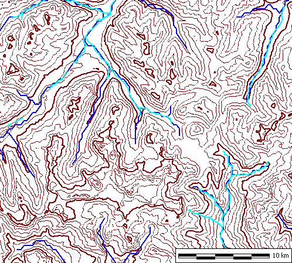
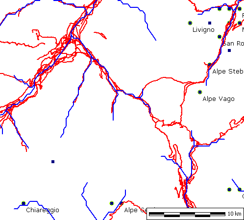
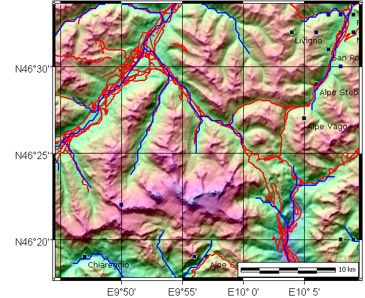

Reflectance map, IHS elevations
Legends/marginalia for the scale bar, elevation color legend
Consider making this grayscale.


- Contour display option
- Blank display option with
 Map Overlays,
Contours
Map Overlays,
Contours
- OpenStreetMaps (cyan)
- HydroSHEDS (blue)

OpenStreetMaps roads (red)

- Prepare
printer image to label
 Lat/long
Graticule
Lat/long
Graticule